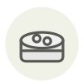

Kaluga caviar ◆
Caviar kaluga
| Latin name | Huso dauricus (roe) |
|---|---|
| Family | Roe & caviar |
| Origin | Amur basin, farmed in Zhejiang |
| Season | All year |
| Flavour | Buttery · Marine · Rich · Mild |
| Typical price | 2,5–5 €/g |
What it is
Kaluga is the beluga's eastern cousin, the other giant Huso, native to the Amur and reaching the same grain calibre. Almost all of it now comes from farms at Qiandao Lake in Zhejiang, frequently as a cross with the Amur sturgeon — the shift that made China the largest caviar producer in the world.
In the kitchen
Its shell is firmer than beluga's, so it survives contact with something warm: it is the large-grain caviar to spoon over a hot ratte or soft scrambled eggs without the grains collapsing.
Goes with
Ratte potato Egg Thick double cream Chives Butter Lemon
Same species
Something wrong here, or missing? Tell us